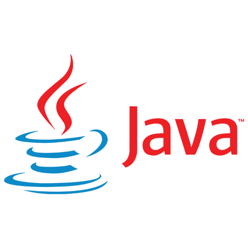

 -- ## Wie ben ik? Robbin Troost Team Ghostbusters -- ## Context * Commons 6 / Spring Boot 3 * Upgraden vereist minimaal Java 17 * Nieuwe features in zowel Spring als Java Notes: meeste is syntactic sugar. Komt allemaal voort uit JEPs. -- ## Java is iets meer dan 27 jaar oud | versie | release date | support eindigt | | ------------ |:---------------:| ---------------:| | 1.0 | 23-01-1996 | ? | | SE 5 | 29-09-2009 | April 2015 | | SE 8 (LTS) | 18-03-2014 | December 2030 | | SE 11 (LTS) | 25-09-2018 | September 2026 | | *SE 17 (LTS) | 14-09-2021 | September 2029 | | SE 21 (LTS) | 19-09-2023 | September 2031 | Notes: Oracle. Azul, Red Hat, etc dates differ -- ## Features | version | features | | --- |:----------------------------------------:| | 5 | generics, annotations, enums, autoboxing, vararg, static imports | | 8 | lambdas, stream API, java.nio (7), default methods | | 11 | var keyword (10), http client, lambda local var syntax | -- ## Wat gaan we bekijken? * Records * Pattern matching * Text blocks * Helpful NPEs * Switch expressions * Sealed classes * Improved Stream API -- ## Records -- ```java public class Point() { private long x; private long y; // getters // setters } ``` -- ```java public record Point(long x, long y) { // nothing to see here } ``` -- * Gelijkwaardig aan Lombok's @Value * Implicit * all-args constructor * getters voor alle velden * `equals` en `hashcode` method * `toString` method * Geen extends mogelijk. Hiervoor is Lombok weer handig. * Efficient op de JVM Notes: * Lombok wordt ook veel gebruikt voor het builder pattern. De technieken zijn niet exclusief, maar vullen elkaar aan. -- ```java public record Point(long x, long y) { // nothing to see here } ``` ```java var p = new Point(10, 20); var q = new Point(10, 20); ``` ```java System.out.println( p ); System.out.println( p.x() ); System.out.println( p.equals(q) ); ``` ```sh Point[x=10, y=20] 10 true ``` -- ## Pattern matching (instanceOf) Notes: Pattern matching involves testing whether an object has a particular structure, then extracting data from that object if there's a match. -- Java 11 ```java if (obj instanceof String) { String s = (String) obj; System.out.println(s.length()); } ``` Java 17 ```java if (obj instanceof String s) { System.out.println(s.length()); } ``` -- ### Pattern matching voor records (JDK 21) -- Java 17 ```java record Point(int x, int y) {} ``` ```java static void printSum(Object o) { if (o instanceof Point p) { int x = p.x(); int y = p.y(); System.out.println(x+y); } } ``` Java 21 ```java record Point(int x, int y) {} void printSum(Object o) { if (o instanceof Point(int x, int y)) { System.out.println(x+y); } } ``` -- ## Text blocks -- Java 11 ```java String html = "<html>\n" + " <body>\n" + " <em>Cool LTS Java 17 Features</em>\n" + " </body>\n" + "</html>\n"; ``` Java 17 ```java String html = """ <html> <body> <em>Cool LTS Java 17 Features</em> </body> </html> """; ``` -- ## Helpful NullPointerExceptions -- Java 11 ```java var street = customer.getAddress().getStreet(); ``` ```sh Exception in thread "main" java.lang.NullPointerException at com.company/com.company.App.main(App.java:17) ``` -- Java 17 ```java var street = customer.address().street(); ``` ```sh Exception in thread "main" java.lang.NullPointerException: Cannot invoke "com.company.Address.street()" because the return value of "com.company.Customer.address()" is null at com.company.Application.main(App.java:21) ``` -- ## Switch expression -- ```java int numDays = switch(month) { case JAN, MAR, MAY, JUL, AUG, OCT, DEC -> 31; case APR, JUN, SEP, NOV -> 30; case FEB -> { if (year % 400 == 0) yield 29; else if (year % 100 == 0) yield 28; else if (year % 4 == 0) yield 29; else yield 28; } }; ``` * een *expression*, niet een *statement* * nieuwe syntax voor beide mogelijk (->) * voorkomt fall-through (`break`) * nadruk op bestaande ergernissen wegnemen Notes: Een expressie produceert altijd een resultaat, een statement niet (bijv. een void call) -- ## Sealed classes -- ```java public abstract sealed class Animal permits Dog, Cat { } public final class Dog extends Animal { } public final class Cat extends Animal { } ``` -- Waarom? * Een enum is exhaustive voor switch, maar wat als het type van een class willen checken? * Handig als je een library ontwikkelt met een stukje polymorfisme erin. * Meer vrijheid voor de ontwikkelaar: widely accessible, not widely extensible Notes: * Open-closed principle? * Design for extension, else prohibit it? * Laatste punt kun je denken aan een abstract class -- ## Improved streams API -- Voorheen: ```java var list = stream.collect(Collectors.toList()) ``` wordt: ```java var list = stream.toList(); ``` Let op: `toList()` geeft een immutable List -- Interessante incubators * Vector API: https://openjdk.org/jeps/417 * Foreign Function and Memory Access API: https://openjdk.org/jeps/442 -- ## Vragen?